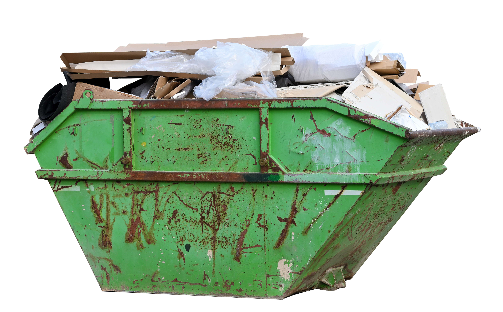

Galhos e entulho
Para agendar o recolhimento de galhos e confirmar o destino correto de entulho, entre em contato com a Secretaria de Meio Ambiente.
Como solicitar o serviço
| Serviço | Como solicitar | Contato |
|---|---|---|
| Coleta gratuita de galhos e resíduos vegetais | Agendamento por telefone ou WhatsApp | (47) 3621-4444 |
| Confirmação sobre entulho de construção civil | Consulte antes de colocar o material na rua | (47) 3621-6117 ou (47) 3621-4444 |
Importante: a coleta gratuita é divulgada para galhos e outros resíduos vegetais. As informações disponíveis não confirmam que o serviço regular inclua entulho de construção civil, como restos de obras, tijolos, concreto e pisos.
Antes de colocar o material na rua
- Entre em contato com a Secretaria de Meio Ambiente para agendar a retirada de galhos.
- Informe o endereço, o tipo de material e a quantidade aproximada.
- Confirme se o entulho de construção será recolhido ou qual é o destino correto.
- Deixe os galhos organizados em local acessível, sem bloquear calçadas, ruas ou bueiros.
- Não coloque o material na rua antes de confirmar o agendamento e as orientações do município.
Contatos da Secretaria de Meio Ambiente
Telefone: (47) 3621-6117
Telefone/WhatsApp para agendamento: (47) 3621-4444
Consulte também a página da Secretaria de Meio Ambiente e a página municipal sobre coleta de galhos.
Voltar à página inicial